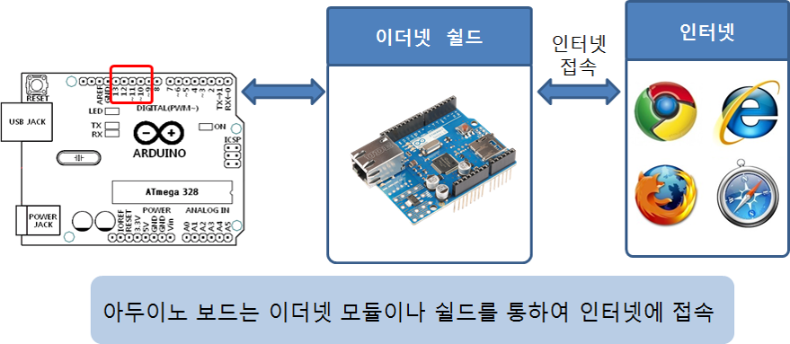

네트워크 범위에 따른 분류

이더넷 (Ethernet)
와이파이 (WiFi)

프로토콜이란?
통신 프로토콜 또는 통신 규약은 컴퓨터나 원거리 통신 장비 사이에서 메시지를 주고 받는 양식과 규칙의 체계 [참고자료]
인터넷 프로토콜 (IP, Internet Procotol)
전송 제어 프로토콜 (TCP, Transmission Control Protocol)
 [참고자료, https://image.slidesharecdn.com/081-111113041506-phpapp01/95/08-1-3-728.jpg?cb=1321157739]
[참고자료, https://image.slidesharecdn.com/081-111113041506-phpapp01/95/08-1-3-728.jpg?cb=1321157739]

운영체계가 MS 윈도우 라면,

아두이노에서 인터넷을 사용하려면 이더넷 (Ethernet)이나 와이파이 (WiFi)을 지원하는 모듈이나 쉴드 혹은 이더넷이나 와이파이 기능이 내장된 보드를 이용해야 한다.

아두이노 이더넷 쉴드 (정품)

아두이노 와이파이 쉴드 (정품)

다양한 종류의 와이파이 쉴드 및 모듈이 시중에 판매되고 있으나, 사용법이 제품별로 다소 상이함.

라이브러리 및 예제 다운로드
다운로드된 zip 파일 압축 풀기
아두이노 IDE에서 [스케치]-[라이브러리 포함하기]-[.ZIP 라이브러리 추가...] 선택
압축이 풀린 폴더 하위의 폴더를 선택 후 [열기] 클릭

라이브러리 추가 확인

WiFi 네트워크 설정
WizArduino MEGA WiFi 보드를 mini-USB (5pin)으로 PC와 연결 후, 업로드
Arduino/Genuino Mega or Mega 2560선택 해야함

시리얼 모니터 창에서 결과 확인

WizFi310 와이파이 모듈을 사용하기 위해 필요한 WizFi310 라이브러리 선언
#include "WizFi310.h"와이파이 무선 액세스 포인터의 네트워크 ID와 패스워드 설정
char ssid[] = "DIR-815_Wiznet"; // your network SSID (name)
char pass[] = "12345678"; // your network password
int status = WL_IDLE_STATUS; // the Wifi radio's status인터넷을 통해 접속할 서버 주소 (다른 주소)
char server[] = "arduino.cc";WiFiClient 객체 선언
// Initialize the Ethernet client object
WiFiClient client;printWifiStatus() 함수 프로토타입 선언
void printWifiStatus();함수정의가 뒤에 나올 거니까 에러 없이 넘어가줘라고 우리에게 말해주는 것입니다.
시리얼 통신 초기화 및 와아파이 모듈 초기화
Serial.begin(115200);
Serial3.begin(115200);
WiFi.init(&Serial3);와이파이 쉴드가 없으면 더이상 진행하지 않음
// check for the presence of the shield
if (WiFi.status() == WL_NO_SHIELD) {
Serial.println("WiFi shield not present");
//SerialUSB.println("WiFi shield not present");
// don't continue
while (true);
}현재 와이파이 네트워크에 연결되지 않았으면, 와이파이 네트워크에 접속
// attempt to connect to WiFi network
while ( status != WL_CONNECTED) {
Serial.print("Attempting to connect to WPA SSID: ");
Serial.println(ssid);
// Connect to WPA/WPA2 network
status = WiFi.begin(ssid, pass);
}
// you're connected now, so print out the data
Serial.println("You're connected to the network");server (arduino.cc)에 접속하여, asciilogo.txt 파일을 요청
Serial.println();
Serial.println("Starting connection to server...");
// if you get a connection, report back via serial
if (client.connect(server, 80)) {
Serial.println("Connected to server");
// Make a HTTP request
client.println("GET /asciilogo.txt HTTP/1.1");
client.println("Host: arduino.cc");
client.println("Connection: close");
client.println();
}서버로부터 온 수신 데이터가 있으면, 이를 읽어서 시리얼 모니터에 출력
// if there are incoming bytes available
// from the server, read them and print them
while (client.available()) {
char c = client.read();
Serial.write(c);
}서버로의 연결이 끊어졌다면, 메시지 출력과 함께 종료
// if the server's disconnected, stop the client
if (!client.connected()) {
Serial.println();
Serial.println("Disconnecting from server...");
client.stop();
// do nothing forevermore
while (true);
}